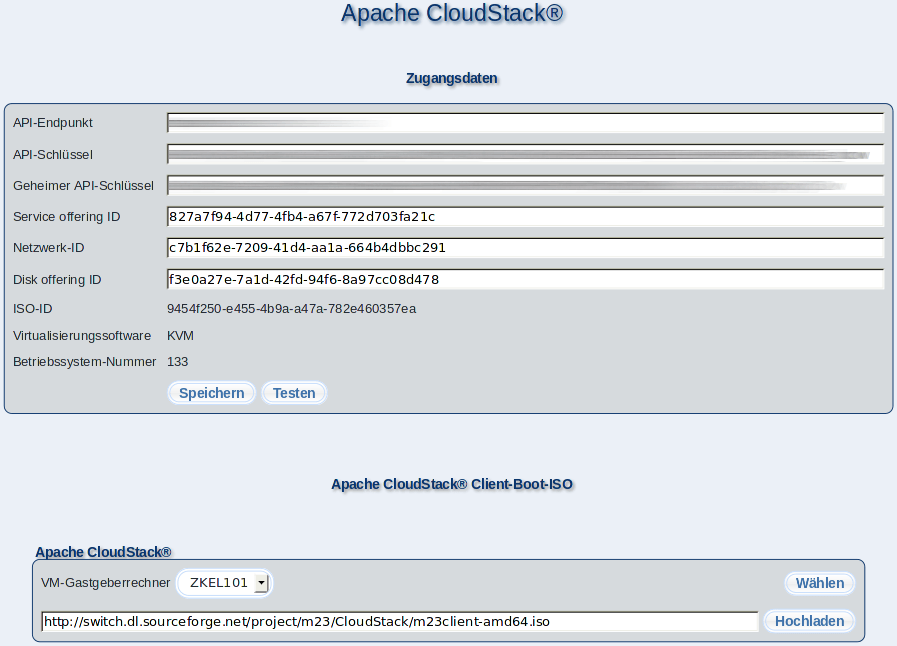

In diesem Dialog können Sie Einstellungen für Apache CloudStack vornehmen.

Unter SZugangsdaten" nehmen Sie einige grundlegende Einstellungen vor, damit eine Verbindung zum Apache CloudStack-Service hergestellt werden kann. Diese Parameter erhalten Sie von Ihrem Apache CloudStack-Betreiber oder aus Ihrer eigenen Apache CloudStack-Installation.
Unter ÄPI-Endpunkt" geben Sie die Adresse (z.B. https://mein-server/client/api ) für die Kommunikation zum Apache CloudStack-Service an. Für den Zugriff benötigen Sie außerdem einen API-Schlüssel und einen geheimen API-Schlüssel, welche Sie unter ÄPI-Schlüssel" und "Geheimer API-Schlüssel" eintragen.
SService offering ID" (CPU und RAM), "Netzwerk-ID" (virtuelles Apache CloudStack-Netzwerk) und "Disk offering ID" (virtueller Festplattentyp) beschreiben die Werte, mit denen ein neuer m23-Client in Apache CloudStack angelegt wird.
Unveränderlich sind (im Moment) die Auswahl des Bootmediums mit dem die Betriebssysteminstallation durchgeführt wird ÏSO-ID", die benötigte Lösung zum Virtualisieren "Virtualisierungssoftware" und die Nummer des Betriebssystems "Betriebssystem-Nummer".
Mit einem Klick auf SSpeichern" bzw. "Testen" speichern Sie die Konfiguration, wobei der 2. Button zuvor einen Verbindungstest durchführt und nur speichert, wenn kein Fehler vorliegt.
Unter Äpache CloudStack Client-Boot-ISO" wählen Sie die Apache CloudStack-Zone ("VM-Gastgeberrechner") aus, in die (falls noch nicht geschehen) das m23-Client-Boot-ISO hochgeladen wird. Starten Sie den Upload mit einem Klick auf "Hochladen". ÏSO-ID" wird nach dem Hochladen automatisch angepaßt.
Die Informationen werden in der Datei "/m23/inc/CloudStackConf.php" auf dem Server abgelegt, die Sie auch mit einem Texteditor bearbeiten können.
Unterabschnitte
dodger
2014-01-22